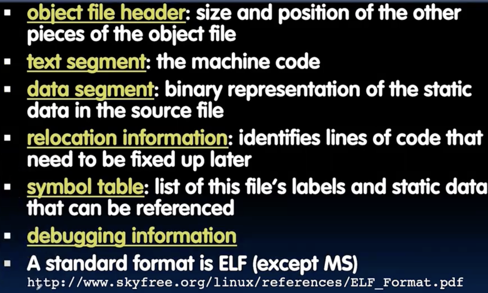
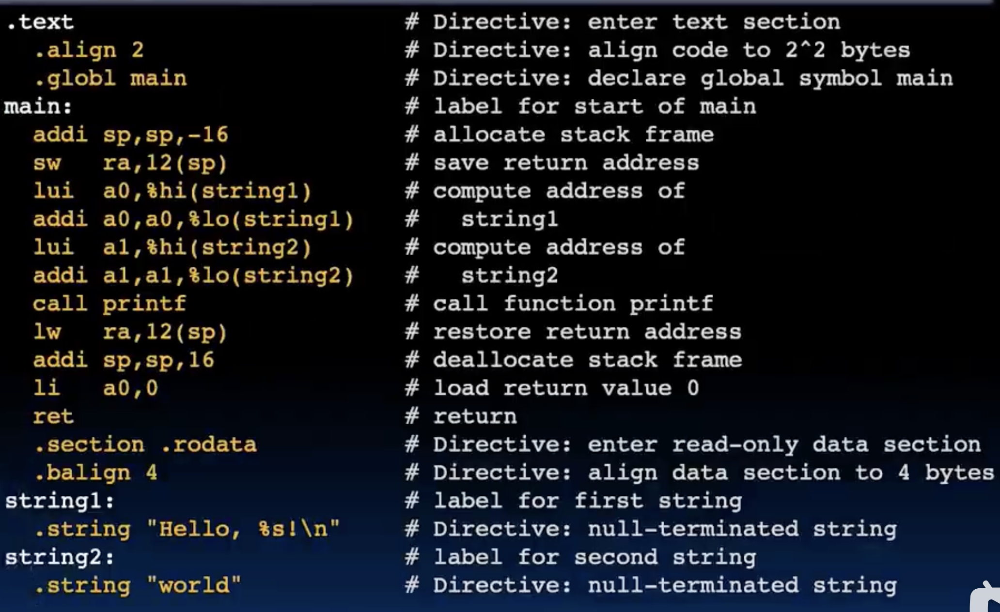
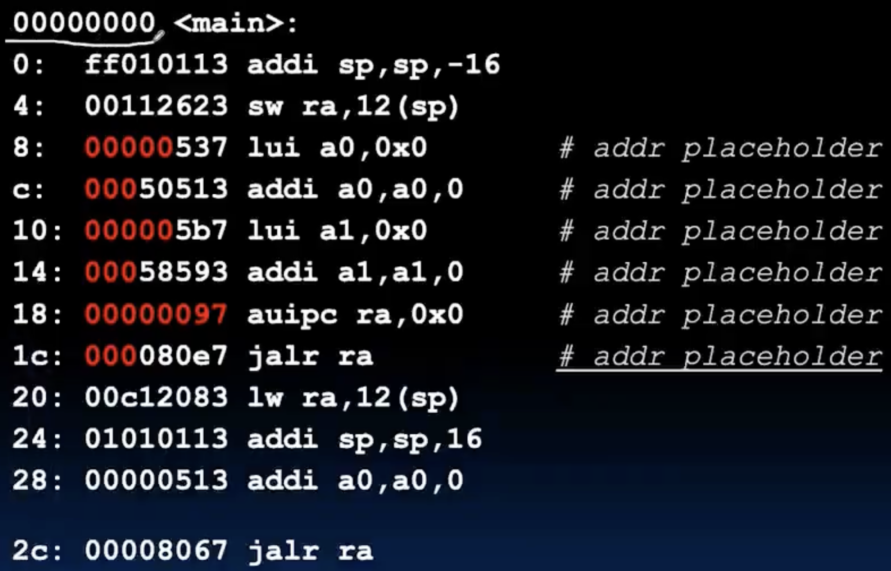
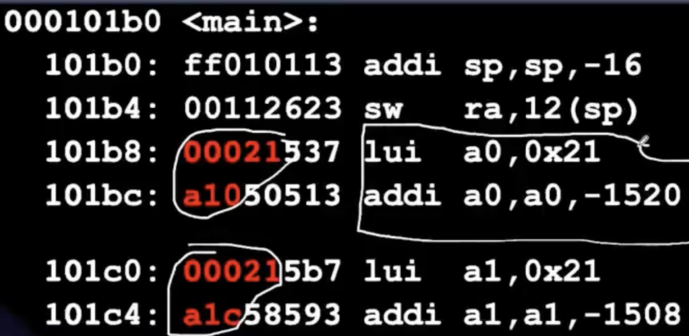

CAll
Compiling,Assembling,Linking and Loading. ISA之下都是硬件，ISA之上就是软件。
解释器和编译器
- Interpreter is a program that executes other programs.
- Translator converts a program from the source language to an equivalent program in another language.
- 甚至可以有c解释器😆，虽然慢的离谱，（cs61a中写过一个scheme解释器，用的python），解释器有什么好处呢？比方说他可以在任意一个机器上跑，而且支持backward，对于旧的ISA的代码在新的上面不好执行，可以设计一个解释器来执行，interpreter slower(10x?),code smaller(2x?)
- 编译器就不一样了，类似流水线，编译成机器码，所以必须针对特定的ISA，这样可以在硬件上快速运行。还有一个重大的好处就是编译的最终可执行文件相比我想要送给别人一个python代码，我的源码别人看不到（反编译很难），所以安全一些。
Compilation
- 将.c文件编译成汇编文件.s
|
|
- -O2表示优化等级，-S表示生成汇编代码，-c表示只编译不链接。
- .s文件的来源可以是编译生成，也可以自己手写，注意.s文件中可能含有伪指令(pseudo-instructions),简化了代码，感谢社区！
Assembler
- 将.s文件汇编成目标文件.o
- assembler directives ，告诉assembler一些额外的信息但是不生成机器码。
- .text 告诉assembler接下来的代码是指令代码段
- .data 告诉assembler接下来的代码是数据段
- .global sym 告诉assembler符号sym是全局的，可以被其他文件引用
- .string str 定义一个以null结尾的字符串
- .word w1..wn 定义一个或多个32位字
- replace pseudo-instructions with real instructions.
|
|
- object file format

- relocation info is something to be discussed later,比如说一些无法确定的地址，需要到linking的时候才能确定。
Linker
- 将多个目标文件.o链接成一个可执行文件.out
- 动态链接和静态链接
- None
Loader
- 将可执行文件加载到内存中运行,本质上是一个操作系统的功能。
An example: Hello World
|
|
如何将这个转换成最终的机器码呢？
- Compilation - from .c to .s


- 为什么.rodata的相对位置会变？ 因为linker会合并各个.o文件中的.text和.rodata段，然后重新分配地址。
- Linking - from .o to .out

Lab4 RISC function,pointers
- 继续用venus模拟器做两个小题目
Exercise 1: Debugging megalistmanips.s
- 和上一次的类似，只不过这次里面操作的是一个int数组。 找到bug并修正：首先是mapLoop的第一行的加载数组地址写成add了，第二个是t0作为偏移量没有乘上4，需要用t寄存器操作一下，第三个是下一个node的地址加载用了la，第四个是s1作为作用函数的地址，本身直接被jalr调用，不需要什么lw，第五个还是很隐蔽的，推荐大家自己用venus跑一下，debug一下，当然直接看出来那我没话说😭
第五个在这，点我！
在秘密函数中，t1被用来存储临时值，但是在maploop中没有保存和恢复，导致t1的值被覆盖，结果错误，所以记得caller保存和恢复t1就可以了。而且这个bug挺坑的，-cc检测似乎只针对callee-saved寄存器，t寄存器不报错，需要我们自己衡量😃- 还有问题就是这个函数流程设计的有点不合理，每次maploop结束后直接跳到map函数，在开头再一次的保存ra，s0，s1，后面两个无关紧要，最大的问题是这个ra在jal map的时候已经ra已经被覆盖了（其实之前jalr s1的时候也覆盖了），所以存进栈的就是错误的ra，但是搞笑的是最后的结果还是对的：由于最后结束是在done中，而done中会jr ra，此时的ra已经是jal map下一个指令，恰好就是done!!!,所以局部小循环🐶，不断的从栈中读取地址，知道最终读回正确的ra地址，然后返回到main的正确位置。
- 早知如此，直接在map保存寄存器和bne done的中间放个zzz标志，然后maploop的最后jal zzz就可以了。
Exercise 2: Write a function without branches
- 要求实现一个函数，输入一个整数，返回一个固定值，但是不允许使用分支。
|
|
这题很简单，只需要填写一个f函数，输入a0是我们的输入参数-3到3，a1是output的地址，由于题目不允许使用跳转和分支，考虑到输入是连续的，直接加三，然后乘上4作为偏移量，lw到a0中即可。